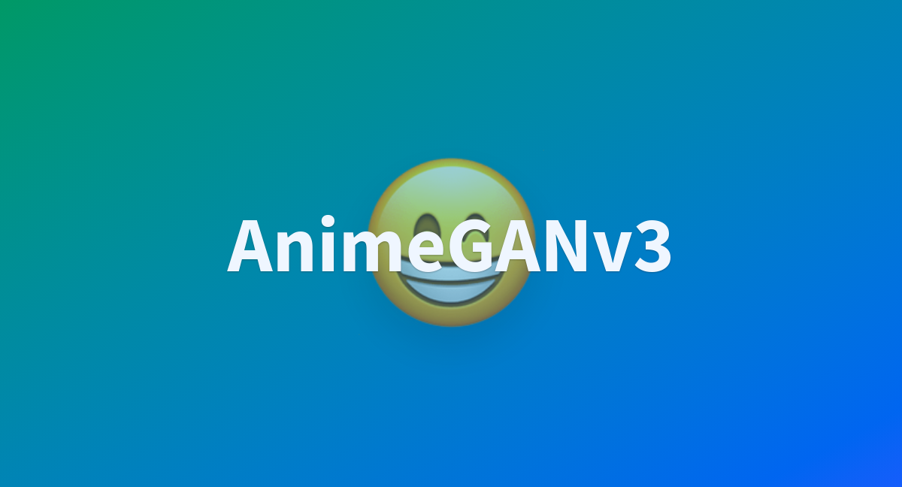
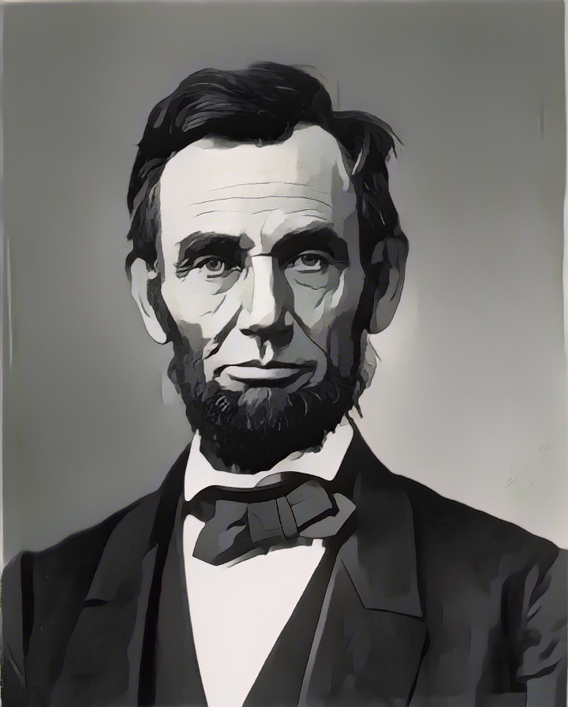

Outils de stylisation testées

AnimeGAN
Projet utilisant les GANs dans le but d'obtenir des rendus das le style "anime" et notamment "Ghibli".

Whitebox Cartoonization
Projet utilisant un GAN pour obtenir un effet cartoon/peinture.

cartoonify image using openCV
Projet Kaggle utilisant OpenCV pour appliquer un filtre cartoon sur l'image.